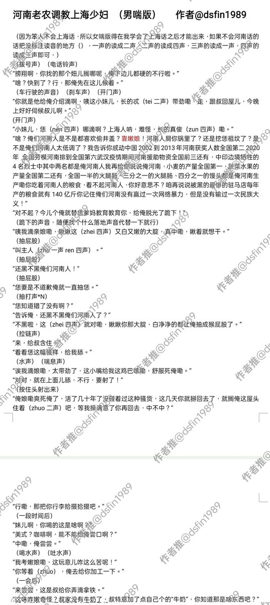
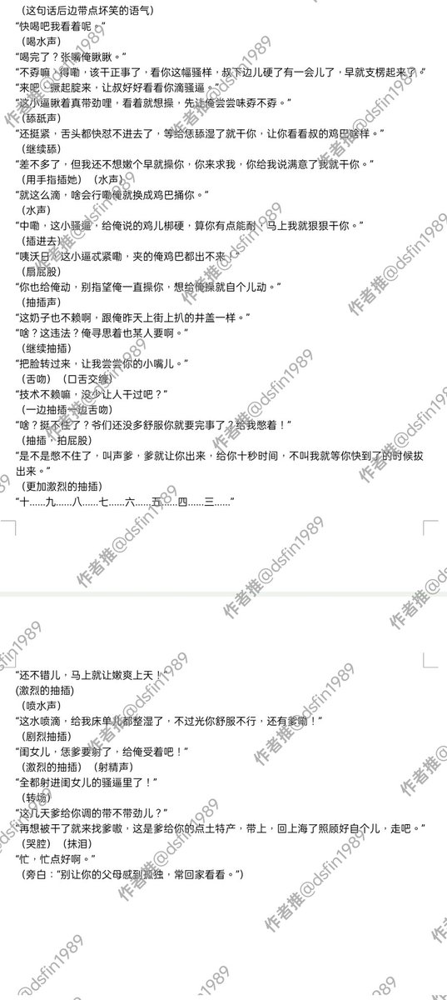

气态雨
@rainnnnn0423
你应该赔我点精神损失费因为我是个长居上海的河南人看的时候脑子里自动脑补两地方言了。


稻上飞归来之河南人偷井盖偶遇打完老婆的山东人和东北人一起去饺子店吃桌饺被上海人歧视触发连招为河南争光
@dsfin1989
《河南老农调教上海少妇 男喘版》
台本：我自己
含有以下玩法：口交 中出 舌吻 创意食物 河南方言 sm 正能量剧情
#男S #男喘 #河南人都是神 #井盖 #河南方言 #上海 #桑海宁 #触发连招 #调教 #正能量 #女m #关注孤寡老人 #温情 #我编不出来了
使用请找本人授权 https://t.co/9iL7XMaxIt